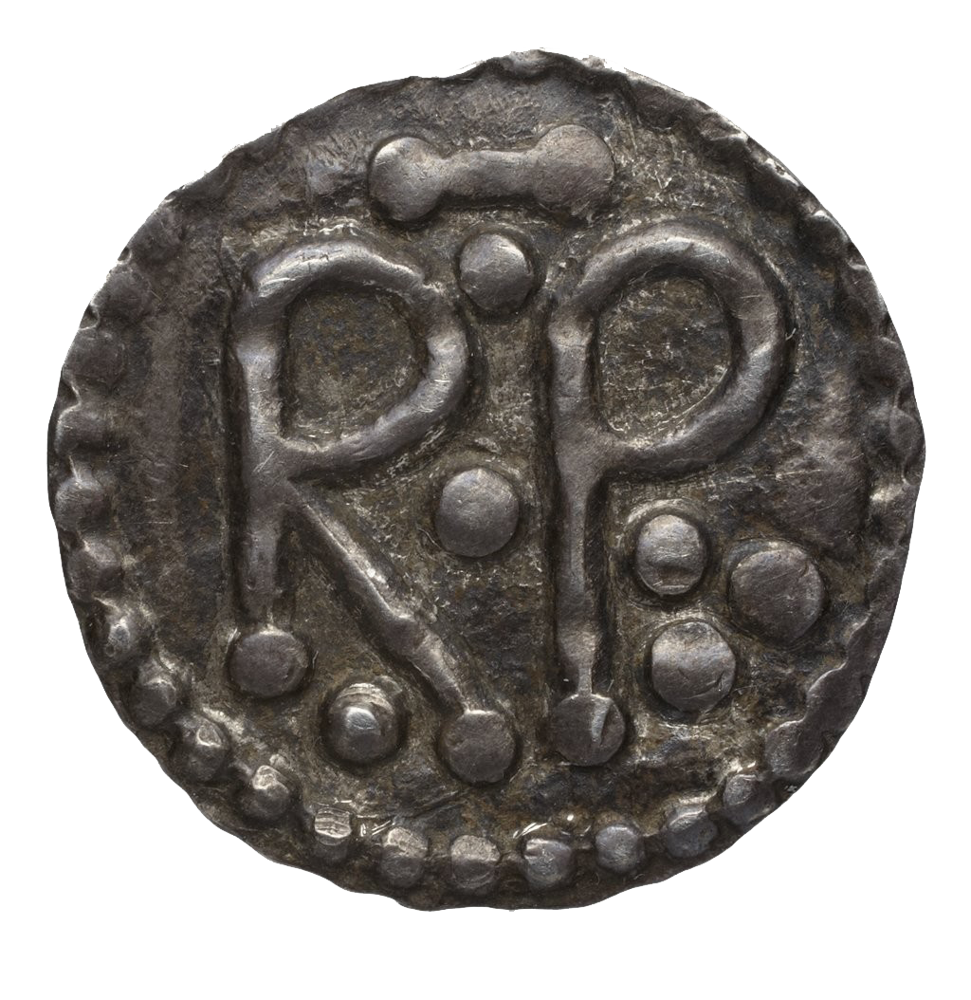

Debate: The Coronation of Pepin the Short(silver denier of King Pepin [RP = Rex Pepinus])
Proposition: The coronation of Pepin the Short as king of the Franks was legitimate.
Team 1: argue for the Proposition
Team 2: argue against the Proposition
Historical background information that you will need to understand, and explain
- Describe the Merovingian dynasty in the 7th and 8th centuries, up to Childeric III. Who were
the rulers, and what were they like?
- Describe Italy in the early 8th century. Who was pope in 750? What were his major
concerns? Who was Aistulf? What were the Lombards
doing in the
740's and 50's?
- What is a mayor of the
palace? Describe the origin and career of
Charles Martel, and Pepin before 751.
- Describe the sequence of events in 750-751 that led to Pepin's being declared king. Give details, and sources.
Primary source evidence
There are several primary sources that describe Pepin's assumption of the Frankish throne. I have put these together in a document called pepinsources.doc, and put it up on Canvas under Files.
Information about Pepin the Short
There is a lot of junk out on the internet! For example, the Wikipedia article on Pepin the Short
is terrible. So I do not recommend looking online for
information. Instead, read your textbook, and also read the section from
T. F. X.
Noble's The Republic of St. Peter: The Birth of the Papal State, 680-825 (1984) on Pepin, pp. 65-94, which has been placed as a PDF file on Canvas in the Files folder as Noble on Pepin.